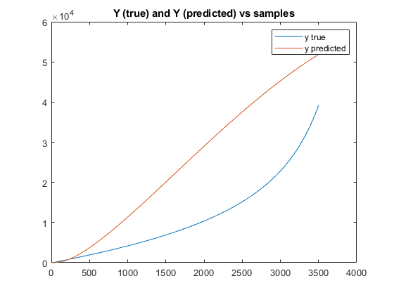
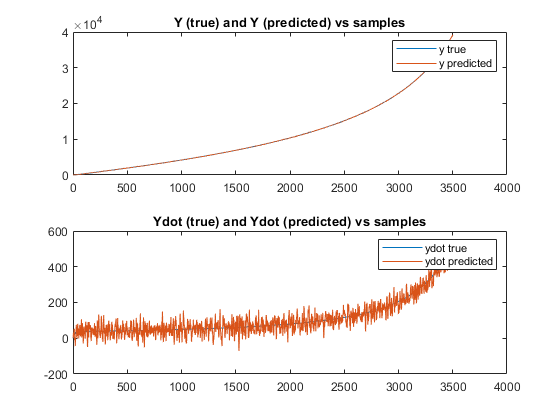
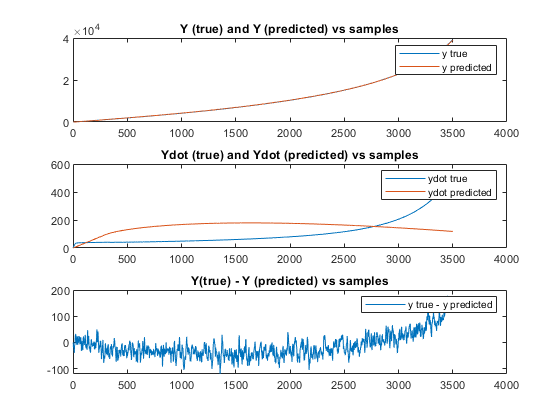

clc; clf; % This assumes that the file "rocket.mat" is present in the same directory. load rocket.mat; deltaT = 0.1; m = 100; g = 9.81; yinit = 0; C = [1 0]; A = [1 deltaT; 0 1]; B = [(deltaT^2)/(2*m) -0.5*(deltaT^2) -(deltaT^2)/(2*m); deltaT/m -deltaT -deltaT/m]; prediction_size = size(ytrue); %%---------- Question 1 ----------------- y_predicted = zeros(prediction_size); x_current = [y(1); ydottrue(1)]; for i = 1:prediction_size x_next = A*x_current + B*u(i, 1:3)'; y_predicted(i) = C*x_current; x_current = x_next; end % Plotting the ytrue values and the predicted y values against the sample % indices figure(1); plot(1:prediction_size, ytrue, 1:prediction_size, y_predicted); legend('y true', 'y predicted'); title('Y (true) and Y (predicted) vs samples'); %As we can clearly see the predicted y values are very different from the %ytrue values provided, and the predicted trajectory coincides only for the %first few samples, beyond which it diverges greatly.
%---------------- Question 2 ------------------ p = [0.8 0.7]; K = place(A', C',p)'; % Initializing the predicted value arrays y_predicted_asymp = zeros(prediction_size); ydot_predicted_asymp = zeros(prediction_size); x_current_asymp = [ytrue(1); ydottrue(1)]; for i = 1:prediction_size %predicting the next state using the asymptotic observer x_next_asymp = (A - K*C)*x_current_asymp + B*u(i, 1:3)' + K*y(i); y_predicted_asymp(i) = C*x_current_asymp; ydot_predicted_asymp(i) = [0 1]*x_current_asymp; x_current_asymp = x_next_asymp; end %Plotting the values of ytrue and the predicted y values against the sample %indices figure(2); subplot(2,1,1); plot(1:prediction_size, ytrue, 1:prediction_size, y_predicted_asymp); legend('y true', 'y predicted'); title('Y (true) and Y (predicted) vs samples'); %Plotting the values of ydottrue and the predicted y dot values against the sample %indices subplot(2,1,2); plot(1:prediction_size, ydottrue, 1:prediction_size, ydot_predicted_asymp); legend('ydot true', 'ydot predicted'); title('Ydot (true) and Ydot (predicted) vs samples'); % Compared to the previous simulation, we can see that the accuracy of the % simulation has increased greatly due to the asymptotic observer feedback.
------------ Question 3 -------------
S = 0; %given Q = 100*eye(2); % R > 2Q for the maximal root to be < R R = 1000; %given % Since S = 0 and Q > 0 P = 0.5 * (Q + (Q^2 + 4*Q*R)^0.5); K = (A*P*C')/(C*P*C' + R); %Initializing the predicted value arrays y_predicted_kalman = zeros(prediction_size); ydot_predicted_kalman = zeros(prediction_size); x_current_kalman = [ytrue(1); ydottrue(1)]; for i = 1:prediction_size % Taking the Kalman gain matrix to be stationary x_next_kalman = (A - K*C)*x_current_kalman + B*u(i, 1:3)' + K*y(i); y_predicted_kalman(i) = C*x_current_kalman; ydot_predicted_kalman(i) = [0 1]*x_current_kalman; x_current_kalman = x_next_kalman; end %Plotting the values of ytrue and the predicted y values against the sample %indices figure(4); subplot(3,1,1); plot(1:prediction_size, ytrue, 1:prediction_size, y_predicted_kalman); legend('y true', 'y predicted'); title('Y (true) and Y (predicted) vs samples'); %Plotting the values of ydottrue and the predicted y dot values against the sample %indices subplot(3,1,2); plot(1:prediction_size, ydottrue, 1:prediction_size, ydot_predicted_kalman); legend('ydot true', 'ydot predicted'); title('Ydot (true) and Ydot (predicted) vs samples'); %Plotting the error values of (ytrue - ypredicted) against the sample %indices subplot(3,1,3); plot(1:prediction_size, ytrue - y_predicted_kalman); legend('y true - y predicted'); title('Y(true) - Y (predicted) vs samples'); %We conclude that the values of the error vary more as the value of Q is %increased, but the absolute error decreases. So an appropriate Q value has %to be chosen.
------------ Question 4 ---------------
% In the previous question, since the Q matrix corresponds only to the % position values' covariance, we are able to predict the y values % reasonably, whereas the velocity values are not accurate. % A way to predict the rocket's vertical velocity would be through the % proper construction of a non-stationary Kalman filter. (In the case above, % we assumed a "stationary" state in which x was not changing greatly, which % isn't the case as the velocity of the rocket changes as well.) We can % conclude that the velocity values can be calculated since the system is % observable.
------------- Question 5 ----------------
% x is now [y ydot d] and A is modified to be a 3x3 matrix. % w(k) has w3(k) included with it, and x(k+1) has d(k+1) included. A_new = [1 deltaT -(deltaT^2)/(2*m); 0 1 -deltaT/m; 0 0 1]; B_new = [B(:,1:2);0 0]; C_new = [1 0 0]; S = 0; Qu = 10; Q = 100*eye(3); Q(3,3) = Qu; R = 1000; P_new = 0.5 * (Q + (Q^2 + 4*Q*R)^0.5); K_new = (A_new*P_new*C_new')/(C_new*P_new*C_new' + R); y_new_predicted_kalman = zeros(prediction_size); ydot_new_predicted_kalman = zeros(prediction_size); xd_current = [ytrue(1); ydottrue(1); dtrue(1)]; for i = 1:prediction_size xd_next = (A_new - K_new*C_new)*xd_current + B_new*u(i, 1:2)' + K_new*y(i); y_new_predicted_kalman(i) = C_new*xd_current; ydot_new_predicted_kalman(i) = [0 1 0]*xd_current; xd_current = xd_next; end %plotting the predicted y and y dot values against the sample indices figure(5); plt1 = subplot(3,1,1); plot(1:prediction_size, ytrue, 1:prediction_size, y_new_predicted_kalman); legend('y true', 'y predicted'); title('Y (true) and Y (predicted) vs samples'); plt2 = subplot(3,1,2); plot(plt2, 1:prediction_size, ydottrue, 1:prediction_size, ydot_new_predicted_kalman); legend('ydot true', 'ydot predicted'); title('Ydot (true) and Ydot (predicted) vs samples');